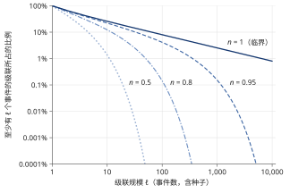

第 8 章 随机传播与 Hawkes 过程
一份期货合约的中间价（midprice）是它的最优买价与最优卖价的平均，与 3.6 节的报价中点（quote midpoint）是同一个量。Filimonov 与 Sornette（2012）取 E-mini 标准普尔 500 指数（S&P 500）期货合约从 1998 年 1 月 5 日到 2010 年 8 月 29 日的数据，在常规交易时段里数出它的中间价共变动 24,309,652 次。他们写道，泊松过程（Poisson process），即事件以固定的平均速率相互独立地到来的过程，描述不了真实订单流（order flow）的典型事实（stylized fact），其中第一条是订单成簇到来。Hardiman、Bercot 与 Bouchaud（2013）把这份合约中间价变动的到来建模为一个自激的 Hawkes 过程（Hawkes process），在这种过程里，每个事件都提高随后事件的速率。
这种过程的分支比（branching ratio）是一个事件直接引发的后续事件的平均个数。两篇论文为同一份合约估计它，得出的图景不同。用一个按指数衰减的核（kernel），核即决定过去一个事件把之后的速率提高多少的函数，在 10 至 30 分钟的窗口里，Filimonov 与 Sornette 发现分支比逐年上升；用一个按幂律（power law）衰减的核，在两个月一段的时期里，Hardiman、Bercot 与 Bouchaud 发现它从 1998 年到 2011 年看来变化不大（8.6 节）。三条限定适用于每一个估计。这些估计数的是中间价的变动，即价格层（price layer）的事件，价格层是报价变动、成交发生的那一层，它们没有记下谁从谁那里听到了一个消息；分支比是从它要解释的同一条序列估出来的；分支比的每一个值还都取决于核、窗口和背景强度（background intensity）的选取，背景强度即与先前事件无关的那些事件到来的速率。1
除了 Vosoughi、Roy 与 Aral 的级联（cascade）、Weng 等用来做参数校准（parameter calibration）的推特数据、Tetlock 对公司新闻的计数和 E-mini 的估计，本章依据的是只从别人的转述里知道的研究，以及背后没有数据的模型（8.7 节）。
8.1 消息传播里的随机性
第 5 章的根模型（root model）跟踪一次传播（propagation）的平均路径，它的方程里没有随机性，接触按固定的速率、在时间上均匀地发生。5.8 节表 5.1 把这两个部分合在一起，列为一条默认假设（default assumption），即确定性平均场（deterministic mean field），本章把两个部分都去掉。它加入随机性，传播由此成为随机传播（stochastic propagation），即结果是一族可能路径的随机过程；8.3 节还让接触成串到来、让速率变化。8.5 节另外去掉一次性注入（one-time injection）的一部分，这条默认是说，消息在开始时就已存在，外部来源（external source）恒定，之后没有公告（announcement）。
基本再生数（basic reproduction number） 是一个传播者在还没有人有这个想法的人群里平均直接传染的人数。Pastor-Satorras 等（2015）指出， 在确定性的模型里是爆发的充分必要条件，在随机的模型里只是必要条件，因为在传播者还少的时候，随机性可能让传播结束（6.2 节）。
随机性改变什么，取决于传播者怎样停下（6.1 节）。在永久传播（permanent spreading）下，即知道的人从不停止转告，又在均匀混合（homogeneous mixing）下，即任何人都可能碰到任何人，相遇的两个人没有用过同样的来源，传播不可能早早断掉，随机性只让曲线在时间上平移（本书的推导；5.2 节）。在自发停止（spontaneous stopping）下，即传播者过一阵就不再说，不管她碰到的人已经知道什么，在恒定的速率与均匀混合下，级联，即从一个种子开始的一串转告，可能早早断掉，断掉的机会不随人群变大而缩小（本书的推导；6.2 节）。这个机会有多大，取决于每个传播者告诉的人数怎样分布（8.2 节）。
在接触触发的停止（contact-triggered stopping）下，传播者碰到已经知道的人就停下。Daley 与 Kendall（1965）的谣言模型（rumor model）说明了随机性在这里起什么作用，模型里的人群是封闭的、均匀混合的，传播者在第一次这样的相遇时就停下（6.3 节）。在他们的随机版本里，一开始有 个人没听说，从未听说的人数有一个两峰的分布。 附近的小峰，与传言（rumor）几乎马上就断掉的风险相联系，这个机会约为 。去掉小峰以后，方差约为 ，从未听说的平均人数的首项是 ；作者认为这非常令人鼓舞，因为这个系数就是确定性模型里从未听说的比例。
所以在一个大人群里，这个模型的随机性带来 量级（order of magnitude）的涨落，与 相比很小，还带来机会为 量级的早夭，主峰平均值的首项在确定性版本里已经给出（本书的判断）。两峰的分布属于接触触发的停止，机会不随人群变大而缩小的早夭属于自发停止，两者都在均匀混合下；两个结果都不能搬到另一支上（本书的判断；6.4 节）。2
8.2 起飞与级联的规模
一条消息会不会大范围传开，与它传多远，是两个不同的量。起飞概率（takeoff probability）是单个种子引起一次大爆发的机会；在一个大人群里，它等于 1 减去灭绝概率（extinction probability），灭绝概率即级联自己断掉的机会（本书的判断；数学框 6.2）。终态规模（final size）是一次大爆发最后波及的人在人群中所占的比例。
取易感-感染-康复模型（susceptible–infected–recovered model，简称 SIR），在这个模型里，传播者自己停下，之后不再开始传播；人群很大，均匀混合，，只有一个种子，看的是几乎还没有人听说的早期。如果每个传播者都有同样一段固定的传播期（infectious period），即她能把消息传下去的那段时间，那么每个传播者引出的新传播者人数服从均值为 2 的泊松分布，级联断掉的机会是 0.2031879，即 两个根里较小的那个，起飞概率约为 0.80（本书的推导；本书的计算）。如果每个传播者以恒定的速率停下，传播期就服从指数分布，这是 Shiller 的 SIR 所做的简化（工作论文版）；这时那个人数服从均值相同的几何分布，灭绝概率是 ，起飞概率是 0.5（本书的推导）。种子一个新传播者也没有引出的机会，在第一种情形里是 ，约 0.135，在第二种情形里是 （本书的计算）。均值相同时，几何分布的人数取零的时候更多，取大值的时候也更多（本书的推导）。
两种情形的终态规模都约为 0.80（本书的计算），因为在均匀混合的大人群里，终态规模只通过每个传播者平均传染的人数依赖传播期，而传播期固定时得到的就是数学框 6.1 的终态方程（本书的推导）。因此，传播期固定时，起飞概率等于终态规模；传播期服从指数分布时，起飞概率低一些（本书的推导）。
Kenah 与 Robins（2007）在另一种设定里证明过一个不等式，这里的结果与它的方向相同（本书的判断）；那个设定是 Newman 研究过的随机网络上的 SIR 模型，在那里，以平均传播概率为连通概率的键渗流（bond percolation）在传播期因人而异时高估起飞概率，因为一个传播者的各次传播都取决于她的传播期（数学框 6.2；7.3 节）。在那个网络 SIR 里，起飞概率从不高于终态规模，只有在流行的概率为零或传播期恒定时，两者才相等。人们谈论一个消息的时间长短不一（本书的判断），但本书读过的出处里，没有一处证明传播期越分散、起飞概率越低，本节只比较了两种分布。3
图 8.1 画出从一个种子开始的级联能长到多大，这时每个事件的直接后代（offspring），即它自己引发的事件，个数服从泊松分布，均值都是同一个 ，即分支比。这就是 Hawkes 过程里一个移民（immigrant），即从外部来的事件，连同它的全部后代组成的簇（8.5 节）。它也是均匀混合的大人群里、传播期固定的 SIR 在几乎还没有人听说时的早期阶段，这时 ，所以 就是阈值（本书的推导）。在有限的人群里，它只对比人群小得多的级联成立（本书的判断）。

级联规模（cascade size）数的是一条级联里的事件，含种子。在临界的情形 下，级联以概率 1 结束，不过它的规模涨落很大。多数级联都很小，但至少有 个事件的比例只是大约按 下降，约 26% 到 10 个事件，8.0% 到 100 个，2.5% 到 1,000 个，0.80% 到 10,000 个（本书的计算）。这样的下降太慢，平均规模不能保持有限，所以平均值没有上界（本书的推导）。
在 以下，每条曲线先沿着临界的那条走，过了某个规模以后陡然下降，这个规模随 接近 1 而增大， = 0.5、0.8 和 0.95 时约为 5、43 和 773 个事件（本书的计算；数学框 8.1）。 时，约 4.1% 的级联到 100 个事件，约 0.15% 到 1,000 个，到 10,000 个的只有 100 亿个里约 7 个（本书的计算）。平均规模是 ， = 0.5、0.8 和 0.95 时是 2、5 和 20 个事件（本书的计算；数学框 8.1）。所以分支比取 0.95 而不取 1，到 1,000 个事件的级联所占的比例约降为原来的 1/17，从 2.5% 降到 0.15%（本书的计算）。市场里估出的分支比（8.6 节）数的是中间价的变动，没有记下谁听说了一个消息，所以本图不把它们换算成消息传播的距离（本书的判断）。4
8.3 突发与变化的速率
确定性平均场的第二个部分让接触按固定的速率、在时间上均匀地发生，就像在泊松过程里那样。在 Pastor-Satorras 等的综述里，社交接触之间的时间间隔服从厚尾分布，社交互动在时间上呈厚尾、偏斜的统计分布，这种情形“常态多于例外”，这引起了人们对突发性（burstiness）的兴趣，突发性即事件成串到来的程度。综述说，这种突发对传播最显著的作用之一，是传播速度大大放慢；这一点最先是在一个电子邮件蠕虫在邮件用户之间传播的模型里看到的，模型是易感-感染模型（susceptible–infected model，简称 SI），其中没有人停止传播（stopping spreading；据 Pastor-Satorras 等的转述）。综述又说，情况并不完全清楚，因为另一些工作提示传播会加速，所以让接触在时间上均匀分布的模型，在速度上两个方向都可能出错（本书的判断）。
Karrer 与 Newman（2010）指出，康复的速率恒定，意味着一个人保持感染的时间服从指数分布，它最可能的取值是零，而多数疾病持续的时间大致恒定。他们举了一个例子，SIR 在由配置模型（configuration model）生成的网络上传播，配置模型即先给每个人定好连线数、再把连线随机接起来，这里连线数服从泊松分布（7.3 节；数学框 7.2）。他们把那种指数的情形与一种礼帽型（top hat）的情形比较，在后者里，一个人染上之后经过一段固定的时间开始有传染力，再过一段固定的时间康复，两段时间的选取使传播的平均时间和传播的总概率都与指数的情形相同。总概率相同，晚期的结果也就相同，但两种情形的过程差别很大。两者的峰都在差不多同一时间，但在指数的情形里，任何时刻处于感染状态的人都更多，流行也持续得更久。礼帽型的情形出现一波一波明显的感染，周期大致等于一个新病例开始有传染力之前的延迟，因为传播者分成了界限分明的一代一代。我们把这读作，人们要先消化再转告的消息，例如一份很长的申报文件，可能一波一波地传开，最后传到的人一样多，某一天知道的人数则不同（本书的判断）。在公告让传播提前结束时，这种时间上的差别就有关系，第 12 章讨论这一点。
速率也可能随人们已经知道的东西变化。在 Duffie、Malamud 与 Manso 的模型里，一个个体与别人相遇的速率，与她选择的努力成正比，而如果每多一单位努力，成本都比上一单位增加得更多，她又把别人的努力当作给定的，那么她最优的努力随她自己信息的精度提高而下降（6.6 节）。只随消息变老而下降的速率，就是第 6 章的热度消退（attention decay），那是一种停止方式，本节不讨论它（本书的判断）。5
8.4 转发级联
Vosoughi、Roy 与 Aral（2018）研究 2006 年至 2017 年在推特上传播的、经过核实的真新闻和假新闻，分类借助六家独立的事实核查机构，这些机构的分类在 95% 至 98% 的情形下一致。按他们的定义，一个级联是一条不间断的转发链，有共同的、单一的源头；一个用户每独立发一次某条传言的内容，这条传言就多一个级联，所以一条传言可以有许多个级联。它的规模是参与的用户数，深度是从最初那条推文起转发的跳数。数据包括约 126,000 个传言级联，由约 300 万人传播了 450 万次以上。
真消息很少传到 1,000 个以上的用户，而假新闻级联里排在前 1% 的，经常传到 1,000 至 100,000 个用户。真消息传到 1,500 个用户所用的时间约为假消息的六倍，达到深度 10 所用的时间是假消息的 20 倍。
Vosoughi、Roy 与 Aral 通过链接到那几家事实核查机构网站的英文回复找到这些级联，再加上这些回复所回应的推文和那些推文的全部转发。作者说，样本只限于六家机构核查过的推文，可能带来选择偏差；在他们自己的标注者意见一致的那些传言上，他们得到的结果与主数据的结果几乎相同。他们的规模只数参与级联的用户，即转发者，看到一条推文而没有转发的人不算在内，所以这些数字没有数到听说了的人（本书的判断）。作者把假消息的传播描述为一种点对点的扩散（diffusion），其特征是病毒式的分支过程（branching process）；在本书读过的他们的正文里，他们没有拟合分支比。级联规模的厚尾分布，可能来自接近 1 的分支比，也可能来自受众多少相差很大的转发者，后者就像下面 Weng 等的模型那样；单看形状分不开这两种来源（本书的判断），所以本章不把他们的分布放在图 8.1 旁边，只用他们正文里印出的数字。
Weng 等（2012）的推特模型可以算出每条帖子平均引出多少后代，帖子即一个用户发出的一条消息。在这个模型里，一个用户以概率 发一个新的模因（meme），模因即用户传下去的一段内容，例如一个话题标签；他们把这个概率取为 0.45，即他们数据里带新话题标签的帖子所占的比例，并调节转发的活跃程度，使模型给出每个用户每单位时间 2.5 条帖子。这样，每条帖子平均引出 条后续的帖子，这只是把参数校准所定下的每个模因平均 条帖子换了一种说法，因为平均级联规模为 时，，任何有限的平均规模给出的 都小于 1（本书的推导；本书的计算；数学框 8.1）。Weng 等没有从他们的推特数据估计分支比。
在用户数和连线数都相同的随机网络上，同一个模型给出的流行程度远没有那么不均，作者用超级节点（hub）用户来解释（7.4 节）。我们把这读作，后代的平均个数由新模因所占的比例和用户的活跃程度决定，厚尾则由后代在各条帖子之间分布得有多不均决定，图 8.1 不含这一来源（本书的判断）。假新闻为什么比真新闻传得更远，新奇与人们转发什么有什么关系，是第 9 章的问题。6
8.5 Hawkes 过程
在 Hawkes 过程里，强度（intensity），即单位时间里事件数的期望值，随每一个事件上升。Filimonov 与 Sornette 把它写成 其中 是过去各个事件的时刻，背景强度 对应外生（exogenous）事件，即不依赖过去的事件，核 给过去事件对后来事件速率的提高加权，从而决定内生（endogenous）反馈（feedback）的强弱。分支比 是核对此后全部时间的积分（数学框 8.2）。
每个事件要么是移民，按背景强度到来，要么是后代；每个移民引发一簇后代，就是 8.2 节的级联，图 8.1 画的是它的规模。从一个移民开始，在 即次临界（subcritical）的情形下，以及在 即临界的情形下，一簇事件以概率 1 结束；在 即超临界（supercritical）的情形下，它可能无止境地增长。在次临界、背景强度为常数的情形下， 也是内生事件，即由先前事件引发的事件，在全部事件中所占的比例，因为一个移民平均引发 个后代。在一段很长的时间里，不管背景强度怎样，内生事件所占比例的期望都是 ，因为每个事件平均直接引发 个后代（本书的推导）；这种读法要求次临界和上面的线性形式，即每个过去的事件把它的核加到速率上，从数据估出的 还取决于拟合所设的背景强度，8.6 节的估计都把它取为常数（本书的判断）。
在事件层（event layer）上，即只记事件发生的时刻、不管谁知道什么的那种描述上，取一个均匀混合、几乎还没有人听说的大人群，把有人听说的每一个时刻算作一个事件。如果每个传播者都以同样的恒定速率、在同样一段固定的传播期里告诉别人，这些事件恰好构成一个由种子开始的 Hawkes 过程，分支比是 （本书的推导）。如果传播期因传播者而异，用平均以后的核的 Hawkes 过程，在事件的平均速率和分支比上与传播相符，但它与任何 Hawkes 过程一样，让每个事件的直接后代数服从泊松分布，所以在 、传播期服从指数分布时，它把灭绝概率算成 0.2031879，而传播本身的是 0.5，从而高估了起飞概率（本书的推导；8.2 节；数学框 8.2）。
Filimonov 与 Sornette 指出，Hawkes 模型此前已经用于图书销量和 YouTube 视频播放量的动态，那些研究挑选的是畅销品，这带来一种偏向接近临界的动态的选择偏差（据 Filimonov 与 Sornette 的转述）。本书读过的出处里，没有一处从数据估计传播事件的分支比，8.4 节的 0.82 来自 Weng 等的模型（本书的判断）。
一个移民可以是一个新事件，例如一条新消息、一条独立发出的推文或一个新的模因，它开始自己的一条级联；这样的到来去掉了一次性注入里所有消息都在开始时就已存在的那一部分（本书的判断）。根模型的恒定外部来源属于这条默认，因为它以固定的速率告诉每一个还没听说的人，而且说的总是同一条消息；移民则按背景强度到来，不管已经有多少人听说，所以两者只在形式上相同（本书的判断）。背景强度为常数时，没有哪个移民是事先排定的；背景强度随时间变化，例如对应日内的活跃规律时，是另一种情形，第 12 章只讨论它最尖锐的形式，即定时的公告。在自发停止下，有外部来源时，外部来源开始的每一条级联都可能断掉，而外部来源不断开始新的级联，所以整个传播一直持续到人人都听说（本书的推导；5.2 节）。同样，在 的 Hawkes 过程里，每一簇事件都会结束，而移民不断到来。新币就是这一类新事件，第 22 章讨论它们。
关于公司的新闻也是成簇到来的。Tetlock（2011）取 1984 年至 2004 年关于标准普尔 500 指数成分公司的新闻，对每家公司数出自它上一次公开新闻事件以来的交易日数，公开新闻事件即至少有一条关于这家公司的报道的交易日，对极端收益的日子也做同样的计数（工作论文版的数字）。两类事件常常挨得很近，约 60% 发生在上一次事件之后五个交易日以内，约 90% 在 20 个交易日以内，他把这读作一个迹象，说明成簇的报道在主题、话题和语气上可能相关（工作论文版的数字）。在事件层上，跟在另一条报道后面的报道，可能是一个新事件，即一个移民，也可能是旧消息的重述，看起来很像一个后代；单看报道的时刻，说不出是哪一种（本书的判断）。旧传闻（stale stories），即含有大量已经出现过的信息的报道，Tetlock 用一些替代指标来标出，例如前一周有另一条关于这家公司的报道；市场对这些报道的反应在下一周部分反转（reversal），对带有新盈余信息的新闻的反应则没有反转（工作论文版；10.7 节）。新闻计数的 Hawkes 模型只凭时间区分移民与后代，所以一条在一段平静之后出现的旧闻重述，可能算作移民；在这样的模型里，移民不一定带有新的信息（本书的判断）。7
8.6 市场里的分支比
市场里估出的分支比数的是价格层的事件。Filimonov 与 Sornette，以及 Hardiman、Bercot 与 Bouchaud，取的都是 E-mini 中间价在常规交易时段里的变动；在这种写法里，每一次变动对速率的作用都相同，不管它的方向和大小，也不管买方或卖方挂单的量。分支比更高，意味着价格变动更加成簇，它对价格往哪个方向走没有说什么（本书的判断）。
Filimonov 与 Sornette 假定背景强度为常数、核为指数核（exponential kernel），在 10、20 和 30 分钟的窗口里拟合。按这些选择， 从 1998 年第一季度到 2000 年第二季度在 0.3 上下波动，从 2002 年起一直高于 0.6，从 2007 年起在 0.7 与 0.8 之间，有时冲到 0.9。他们把后来的这些值读作 70% 以上的价格变动来自过去价格变动的正反馈，这种读法只在背景强度为常数的线性 Hawkes 过程里成立（8.5 节）。他们还写道，他们的值很可能低于真实的值，因为短的窗口漏掉了窗口之前、可能引发窗口之内变动的价格变动。他们报告，对 的估计的标准差在 1998 年约为 0.13 至 0.18，2002 年以后从未超过 0.035，这只涵盖他们把同一秒里的事件分散开的做法带来的不确定性（本书的判断）。
Hardiman、Bercot 与 Bouchaud 取一个按幂律衰减的核，在 1998 年至 2011 年互不重叠的两个月一段的时期里拟合。他们发现，不管分析的是哪一段时期，核的积分都是 1，所以分支比在这十四年里看来变化不大，在临界值 1 上下波动。他们提出，用 30 分钟窗口里的指数核去拟合一个临界的幂律过程，如果这个过程在短时间一端的截断随时间变化，就可能得到一个随时间上升的次临界分支比；他们从一个 的临界 Hawkes 过程生成数据，在这些数据上确实如此。
Hardiman 与 Bouchaud 的均值-方差估计量（mean-variance estimator）只需要一个窗口里事件数的均值和方差；方差等于均值的计数，例如服从泊松统计的计数，给出的估计为零，在 Hawkes 的框架里，方差超出均值的部分都读作一个正的分支比。在任何有限的窗口里，这个估计都低于分支比。窗口固定时，它重现了 Filimonov 与 Sornette 报告的上升；窗口每 18 个月减半，以适应市场里越来越快的互动，这时它大致保持不变，数据从 1998 年到 2013 年。用 2010 年 E-mini 的中间价变动，窗口变大时估计趋于 1.0；他们指出，让窗口无限变大，就是要一个平稳（stationary）的 Hawkes 模型，即统计性质不随时间变化的模型，去解释事件率在长时间尺度（time scale）上的变化。他们强调，只有 Hawkes 过程确切地代表了市场，他们关于临界性的结论才成立。
Filimonov 与 Sornette 后来对衰减缓慢的核的研究表明，异常值、边界效应和非平稳性可能让这类估计产生显著的偏差（据 Bacry、Mastromatteo 与 Muzy 的转述）；接近 1 的读数是否来自这样的偏差，在我们的出处里没有定论（本书的判断）。放在一起读，同一份合约的这些估计随核与窗口移动，移动的幅度远大于 Filimonov 与 Sornette 处理时间戳所给出的分散（本书的判断）。在 Hawkes 模型里，一次外生的中间价变动开始的那一簇事件，规模就是图 8.1 画的那样，在那里，分支比取 0.95 而不取 1，能到 1,000 个事件的簇约少到原来的 1/17（本书的计算；8.2 节），所以这些估计没有定下中间价变动最大的簇能长到多大（本书的判断）。
适用边界 分支比随核的形式、窗口的长度和背景强度的设定而变。指数核配 10 至 30 分钟的窗口，在 1998 年至 2000 年读出约 0.3，从 2007 年起读出 0.7 至 0.8；幂律核（power-law kernel）配两个月的窗口，读出约 1，时期是 1998 年至 2011 年；窗口无限变大时，2010 年的均值-方差估计也趋于 1，所以从长期看，市场可能接近临界。这些估计数的是 E-mini 中间价在价格层的变动，又是从它们要解释的同一条序列估出来的。没有一个读数能摆脱这些设定；只有在背景强度为常数的线性 Hawkes 过程里，一个读数才可以读作内生事件所占的比例。另一个候选说法，即交易活动的长程记忆（long memory；它的速率里的相关衰减得太慢，加不出一个有限的总和）的指数与波动率的相近，还没有检验过，本书也不把它当作结论；Hardiman、Bercot 与 Bouchaud 只在一个市场，即 E-mini 上，拿它与已发表的值比较过，而且活动的指数是由核的指数算出来的，所以活动的指数与核的指数来自事件率的同一组相关；没有来自几个市场的测量。
单看事件的时刻，分不开自激与来自外部的时间上的聚集（本书的判断）。随时间变化的背景强度，例如像 Tetlock 的数据里那样成簇到来的新闻（8.5 节），或者定时的公告，同样会让计数的方差超过均值；用常数背景强度做的拟合，会把这部分超出读成更大的分支比（本书的判断）。Hardiman、Bercot 与 Bouchaud 在拟合之前去掉了日内的活跃规律，因为不去掉的话，拟合会把一天之内事件率的缓慢变化读成核的形状。一种检验是把拟合好的模型推断出的外生事件，与新闻和公告的时刻放在一起比较；另一种是加入一个新闻核（news kernel），即在每条新闻的时刻前后提高速率的一项（本书的判断）。
传播事件和交易事件都有分支比，两者数的东西不同（表 8.1）。
表 8.1 并列的两种 Hawkes 过程
| 传播事件 | 交易事件 | |
|---|---|---|
| 一个事件 | 有人听说一个消息，从别人那里听说，或者通过一次转发 | E-mini 中间价的一次变动 |
| 一个事件引发什么 | 听说的人的转告 | 中间价后来的变动，每次都把速率提高同样多，不管它的方向和大小 |
| 移民 | 一条新消息、一条独立发出的推文、一个新的模因 | 模型算作外生的变动；Filimonov 与 Sornette 把它们读作真正的新闻，没有拿它们与新闻的时刻核对（本书的判断） |
| 我们的出处里的分支比 | 没有从数据估出的；约 0.82，由 Weng 等的模型推出（本书的推导；8.4 节）；图书销量和视频播放量接近临界，出自挑选畅销品的研究（据 Filimonov 与 Sornette 的转述） | 随核、窗口、时期和背景强度而变（8.6 节） |
| 分支比更高 | 级联更大、持续更久；低于 1 时每一条仍会结束，高于 1 时其中一条可能无止境地延续 | 价格变动更加成簇，不涉及它们的方向，也不涉及交易者怎样得知新闻（本书的判断） |
| 外来的聚集读成自激 | 有可能，新闻成簇到来时（本书的判断；8.5 节） | 有可能，有新闻或日内的活跃规律时（本书的判断）；Hardiman、Bercot 与 Bouchaud 在拟合之前去掉了后者 |
第 17 章讨论一笔交易怎样推动价格、这种影响怎样消退，以及随机到来的交易。8
8.7 本章引用的实证证据
本章背后有四组数据。
- 转发级联（retweet cascade）。 Vosoughi、Roy 与 Aral 的级联，是 2006 年至 2017 年在推特上传播的、经过核实的真新闻和假新闻，通过链接到六家事实核查机构网站的英文回复找到。本书读的是期刊版，没有读他们的补充材料（8.4 节）。
- Weng 等模型背后的转发。 Weng 等用来做参数校准的，是 2010 年 10 月至 2011 年 1 月的转发，这是他们方法部分给出的时期，不过他们的一些图涵盖的时间更长（本书的判断；6.7 节）。
- 公司新闻。 Tetlock 的 1984 年至 2004 年关于标准普尔 500 指数成分公司的新闻（工作论文版的数字；8.5 节）。
- E-mini 中间价的变动。 8.6 节的估计所用的中间价变动，在 Filimonov 与 Sornette 那里是 1998 年 1 月 5 日至 2010 年 8 月 29 日，在 Hardiman、Bercot 与 Bouchaud 那里是 1998 年至 2011 年，在 Hardiman 与 Bouchaud 那里是 2010 年以及 1998 年至 2013 年，三篇读的都是 arXiv 预印本。
- 只从转述里知道的。 图书销量和视频播放量的研究，以及社交接触在时间上的厚尾分布。
- 背后没有数据的模型结果。 其余的一切，包括 Daley 与 Kendall 的两峰分布；Kenah 与 Robins 以及 Karrer 与 Newman 的结果； 的比较和图 8.1（本书的计算）；由 Weng 等的模型推出的 0.82（本书的推导）；以及 Pastor-Satorras 等转述的接触突发的作用。9
8.8 交易者的自查清单
没有一个问题说该买什么、卖什么，答得好也不能让一笔交易变得安全（本书的判断）。
- 这个消息究竟会不会起飞？ 核对：读任何关于一个消息能传多远的数字之前，先问它的传播者怎样停下，每个人传播多久。在均匀混合的大人群里，传播者自己停下，只有一个种子，，起飞概率在传播时间固定时约为 0.80，在停下的速率恒定时是 0.5，终态规模在两种情形下都约为 0.80（本书的推导；本书的计算；8.2 节）。
- 尾巴有多厚？ 核对：每个事件的直接后代数都服从均值相同的泊松分布时，分支比接近 1 给出的多数级联很小、少数非常大，分支比略低于 1，大级联就少得多（本书的计算；图 8.1）。在推特这样的网络上，大小相差很大的受众也能造成厚尾，所以单看形状，得不出分支比（本书的判断；8.4 节）。
- 是新事件，还是旧消息又说了一遍？ 可检验：在 Tetlock 的 1984 年至 2004 年关于标准普尔 500 指数成分公司的新闻里，他的替代指标把一些报道标为旧传闻，市场对这些报道的反应在下一周部分反转，对带有新盈余信息的新闻的反应则没有反转（工作论文版的数字；8.5 节）。单看新闻事件的时刻，分不开新事件与重述；这个差别在 2004 年以后是否成立，可以检验（本书的判断）。
- 哪个核、哪个窗口、哪个时期、哪些事件？ 核对：引用一个市场的分支比之前，先写下它的核、窗口、时期和所数的事件，再换一个核或窗口重新拟合，看它是否移动（本书的判断）。对 E-mini，估计随这些设定以及背景强度的设定而变，数的是价格层的中间价变动，又是从它要解释的同一条序列估出来的，见 8.6 节和那里的边界框（scope box）。只有在背景强度为常数的线性 Hawkes 过程里，一个读数才可以读作内生事件所占的比例。
- 是自激，还是新闻驱动？ 可检验：把拟合好的模型推断出的外生事件与新闻和公告的时刻放在一起比较，或者在模型里加一个新闻核（本书的判断；8.6 节）。在我们的出处里，没有人为 E-mini 做过第一种比较（本书的判断）。
8.9 小结
- 随机性改变什么，取决于传播者怎样停下。在自发停止、恒定速率与均匀混合下，从一个种子开始的级联可能早早断掉，断掉的机会不随人群变大而缩小（本书的推导；8.1 节）。
- 对均匀混合的大人群里的 SIR，取 ，传播期固定时起飞概率约为 0.80，传播期服从指数分布时是 0.5，而两种情形的终态规模都约为 0.80（本书的推导；本书的计算；8.2 节）。
- 每个事件的直接后代数都服从均值同为 的泊松分布时，级联规模在 时有一条厚尾，分支比略低于 1，大级联就少得多（本书的计算；图 8.1）。
- Vosoughi、Roy 与 Aral 的推特级联来自 2006 年至 2017 年经过事实核查的新闻，其中最大的假新闻级联传到的转发者比真新闻的多得多；样本可能有偏差，本书读过的正文没有拟合分支比（8.4 节）。
- 在线性 Hawkes 过程里，分支比是核的积分；次临界时，它是一段很长的时间里内生事件所占比例的期望，从数据估出的分支比还取决于拟合所设的背景强度（本书的推导；本书的判断；8.5 节）。
- E-mini 的分支比数的是价格层的中间价变动，表 8.1 把它们与传播事件分开；它们随核的形式、窗口、时期和背景强度的设定而变（8.6 节和那里的边界框）。
- 单看事件的时刻，分不开自激与来自外部的时间上的聚集，例如成簇到来的新闻或定时的公告（本书的判断；8.6 节和表 8.1）。
8.10 写给量化读者的数学框
数学框 8.1 分支过程的符号形式
符号。 是分支比，即一个事件直接引发的事件的平均个数；书中别处这个字母另有含义。 是一条级联里的事件数，含种子， 是它的一个取值。 是级联结束的机会， 是起飞概率。
泊松后代。 设每个事件的直接后代数服从均值为 的泊松分布，各事件之间相互独立。这就是图 8.1 的模型，适用于 8.2 节给出的设定。种子的全部后代开始的级联都结束时，这条级联就结束，所以 是下式在 里最小的根 这个根在 时是 1，在 时介于 0 与 1 之间（本书的推导）。取 ，即数学框 6.1 里从未染上这个想法的人所占的比例，并取 ，这就是那个框里的终态方程，它对固定的传播期也成立（8.2 节），所以在这个设定里，传播期固定时起飞概率等于终态规模（本书的推导）。
几何后代。 在同样的设定里，如果传播者以恒定的速率停下，传播期就服从指数分布，早期的后代数服从均值为 的几何分布，即对每个整数 ，。这时对 ，（本书的推导）。
级联规模。 对泊松后代， 服从 Borel 分布 它对 求和等于 （本书的推导）。 时，平均值是 ，即种子加上它各代一共 个后代。 时，对大的 ，，这就是图 8.1 的临界线。 时， 大约按 下降，其中 ，所以比 个事件大得多的级联很少，具体的值见 8.2 节（本书的推导；本书的计算）。
Weng 等模型里的平均后代数。 一个单位时间等于用户数那么多步。参数 决定进入系统的新奇，即级联的个数， 决定总的转发活跃程度，即级联的规模； 对应带新话题标签的帖子所占的比例，约为 ；平均活跃程度，即每个用户每单位时间的帖子数，在他们的标准模型里是 2.5。所以每个用户每单位时间约开始 0.45 个新模因，写 2.5 条帖子，每一条不开始新模因的帖子都复制一个已有的模因。于是一个模因平均得到 条帖子，每条帖子平均引出 条后续的帖子（本书的推导；本书的计算）。所以在模型里，约 的帖子开始新的模因，对照他们数据里约 0.45 的帖子带新话题标签；这个 0.82 属于校准以后的模型，不能从数据里直接读出（本书的计算；本书的判断）。
网络。 在 Kenah 与 Robins 的网络 SIR 里，在大人群中，起飞概率等于种子落在巨入分量（giant in-component）里的概率，巨入分量即这样一大群人，其中任何一人染上都会引起一次大爆发；终态规模等于网络里属于巨出分量（giant out-component）的那部分所占的比例，巨出分量即一次大爆发所波及的那一大群人。在键渗流里，每条连线独立地连通或断开，连通的连线双向传染，这时两群人重合（本书的判断）；传播期随机时两者不同，键渗流高估起飞概率。
本框里本书推导的严格写法与证明将放在附录。10
数学框 8.2 Hawkes 过程的符号形式
符号。 是强度， 是背景强度， 是核， 是过去各个事件的时刻， 是分支比，与数学框 8.1 相同， 是事件的平均速率。这些字母与数学框 1.2 的相遇速率 、第 7 章的传播率 和最大特征值 ，以及数学框 6.1 从 Pastor-Satorras 等那里引来的 都无关。
强度与分支比。 强度取 8.5 节的 ，分支比是 且 为常数时，一个移民平均引发 个后代，所以内生事件在全部事件中占比 。
三种情形。 且 为常数时，过程是平稳的，统计性质不随时间变化，平均速率 。 时它不平稳，可能在有限的时间里爆炸。 为正时，这个式子在 给不出有限的平均速率（本书的推导）。Brémaud 与 Massoulié 分析过这种情形；Bacry、Mastromatteo 与 Muzy 转述他们的工作说，没有移民（）、核的尾部按 下降且 时，平均强度有限，而且只有 在这个区间里时，这样的过程才是非平凡的。一个平稳的、均值和方差都有限的 Hawkes 过程，如果事件率有长程记忆，即自协方差的积分发散，就必然是临界的。
传播事件。 在 8.5 节的设定里，即均匀混合的大人群的早期，一个传播者在一段固定的传播期里以恒定的速率告诉别人，给出的核在这段时期里等于这个速率，之后为零（本书的推导）。在永久传播下，核永远不降到零，分支比没有上界，所以过程无止境地增长，不可能早早断掉（本书的推导；8.1 节）。很多人听说以后，每个传播者能告诉的人变少，速率不再是过去事件的核之和，这种描述也就不再是 Hawkes 过程（本书的推导）。
估计。 选定一种核、用最大似然拟合得到的 的估计，在很大程度上取决于这个选择。在 Filimonov 与 Sornette 的 10 至 30 分钟的窗口里，截断让 降低、让 升高。Hardiman 与 Bouchaud 的均值-方差估计量只用长为 的窗口里事件数的均值 和方差 ， 它在泊松统计下，即方差等于均值时为 0，在任何有限的窗口里都低于 。这里的 与背景强度无关。Bacry、Mastromatteo 与 Muzy 印的根号下的比是倒过来的，本框照 Hardiman 与 Bouchaud 写。11
本章文献
本章引用的文献。所读版本不是期刊版的，条目里写明读的是哪个版本；尾注里的页码按所读的版本。
- Bacry, E., I. Mastromatteo and J.-F. Muzy (2015). Hawkes Processes in Finance. Market Microstructure and Liquidity. 所读为 arXiv 预印本 1502.04592v2；没有核对期刊版。
- Brémaud, P., and L. Massoulié (2001). Hawkes Branching Point Processes without Ancestors. Journal of Applied Probability 38(1): 122–135. 没有读；按 Bacry、Mastromatteo 与 Muzy（2015）的转述介绍。
- Crane, R., and D. Sornette (2008). Robust Dynamic Classes Revealed by Measuring the Response Function of a Social System. Proceedings of the National Academy of Sciences 105(41): 15649–15653. 没有读；按 Filimonov 与 Sornette（2012）的转述介绍。
- Daley, D. J., and D. G. Kendall (1965). Stochastic Rumours. Journal of the Institute of Mathematics and Its Applications 1: 42–55.
- Duffie, D., S. Malamud and G. Manso (2009). Information Percolation with Equilibrium Search Dynamics. Econometrica 77(5): 1513–1574. 所读为 arXiv 预印本 0811.3023v1；没有核对期刊版。
- Filimonov, V., and D. Sornette (2012). Quantifying Reflexivity in Financial Markets: Toward a Prediction of Flash Crashes. Physical Review E 85: 056108. 所读为 arXiv 预印本 1201.3572v2；没有核对期刊版。
- Filimonov, V., and D. Sornette (2015). Apparent Criticality and Calibration Issues in the Hawkes Self-Excited Point Process Model: Application to High-Frequency Financial Data. Quantitative Finance. 没有读；按 Bacry、Mastromatteo 与 Muzy（2015）的转述介绍，他们引的是 arXiv 预印本 1308.6756。
- Hardiman, S. J., N. Bercot and J.-P. Bouchaud (2013). Critical Reflexivity in Financial Markets: A Hawkes Process Analysis. European Physical Journal B 86. 所读为 arXiv 预印本 1302.1405v2；没有核对期刊版。
- Hardiman, S. J., and J.-P. Bouchaud (2014). Branching-Ratio Approximation for the Self-Exciting Hawkes Process. Physical Review E 90: 062807. 所读为 arXiv 预印本 1403.5227v3；没有核对期刊版。
- Jo, H.-H., J. I. Perotti, K. Kaski and J. Kertész (2014). Physical Review X 4: 011041，列出时没有题名。没有读；按 Pastor-Satorras 等（2015）的转述介绍。
- Karrer, B., and M. E. J. Newman (2010). Message Passing Approach for General Epidemic Models. Physical Review E 82: 016101. 所读为 arXiv 预印本 1003.5673v2；没有核对期刊版。
- Kenah, E., and J. M. Robins (2007). Second Look at the Spread of Epidemics on Networks. Physical Review E 76: 036113. 所读为 arXiv 预印本 q-bio/0610057v5；没有核对期刊版。
- Min, B., K.-I. Goh and A. Vazquez (2011). Physical Review E 83(3): 036102，列出时没有题名。没有读；按 Pastor-Satorras 等（2015）的转述介绍。
- Newman, M. E. J. (2002). Spread of Epidemic Disease on Networks. Physical Review E 66: 016128. 没有读；按 Kenah 与 Robins（2007）的转述介绍。
- Pastor-Satorras, R., C. Castellano, P. Van Mieghem and A. Vespignani (2015). Epidemic Processes in Complex Networks. Reviews of Modern Physics 87(3): 925–979. 所读为 arXiv 预印本 1408.2701v2；没有核对期刊版。
- Shiller, R. J. (2017). Narrative Economics. American Economic Review 107(4): 967–1004. 所读为 2017 年 1 月的 NBER 工作论文 23075；没有核对期刊版。
- Sornette, D., F. Deschatres, T. Gilbert and Y. Ageon (2004). Endogenous Versus Exogenous Shocks in Complex Networks: An Empirical Test Using Book Sale Ranking. Physical Review Letters 93(22): 228701. 没有读；按 Filimonov 与 Sornette（2012）的转述介绍。
- Tetlock, P. C. (2011). All the News That’s Fit to Reprint: Do Investors React to Stale Information? Review of Financial Studies 24(5): 1481–1512. 所读为 2008 年 2 月的工作论文。
- Vazquez, A., B. Rácz, A. Lukács and A.-L. Barabási (2007). Physical Review Letters 98: 158702，列出时没有题名。没有读；按 Pastor-Satorras 等（2015）的转述介绍。
- Vosoughi, S., D. Roy and S. Aral (2018). The Spread of True and False News Online. Science 359(6380): 1146–1151.
- Weng, L., A. Flammini, A. Vespignani and F. Menczer (2012). Competition among Memes in a World with Limited Attention. Scientific Reports 2: 335.
注释
1. Filimonov 与 Sornette（2012）所读为 arXiv 预印本 1201.3572v2；没有核对 Physical Review E 的版本，节号与页码按预印本：数据在 §II，第 4 页；中间价和它的变动次数在 §II，第 5 页；泊松过程和订单流的典型事实在 §III，第 6 页；分支比在 §III，第 7 页；常数背景强度、指数核和窗口在 §IV，第 8–9 页；2002 年以来的值在 §V，第 13 页。Hardiman、Bercot 与 Bouchaud（2013）所读为 arXiv 预印本 1302.1405v2；没有核对 European Physical Journal B 的版本。预印本：中间价变动的 Hawkes 模型和 1998 年至 2011 年的核在摘要，第 1 页；分支比在 §II.A，第 2 页；数据和两个月一段的时期在 §III，第 4 页；十四年里的分支比在 §III，第 4–5 页。
2. Daley 与 Kendall（1965），期刊版：小峰、它的机会、它对均值和方差的贡献、主峰、去掉小峰、他们的式 (10) 和 (11) 以及首项系数在第 47 页。小峰给从未听说的平均人数加上约 0.5，给方差加上约 ，几乎占总方差的一半；主峰的众数约在 ，分布正偏。他们的 §5（第 49 页）用一种扩散方法估计同一个方差，他们不声称这种方法是严格的。Pastor-Satorras 等（2015）所读为 arXiv 预印本 1408.2701v2；没有核对 Reviews of Modern Physics 的版本。预印本：确定性模型和随机模型的阈值在 §II.B。关于均匀混合下的永久传播，本书的推导是：知道的人数只会增加，所以随机性只在知道的人还少时起作用；知道的人多了以后，传播沿确定性的曲线走，起点已经由随机性提前或推后。
3. Kenah 与 Robins（2007）所读为 arXiv 预印本 q-bio/0610057v5；没有核对 Physical Review E 的版本，节号按预印本：Newman 的论断、键渗流预测对了什么和漏了什么，在摘要；接触网络（contact network）和一个传播者各次传播之间的依赖在 §1；不等式在 §5；高估在 §7。Shiller（2017）所读为 2017 年 1 月的 NBER 工作论文 23075；没有核对 American Economic Review 的版本。工作论文：按指数衰减的康复在第 14 页。在均匀混合的大人群里、在早期，本书的推导是：传播期固定时，新传播者的人数服从均值为 的泊松分布，灭绝概率是 最小的根；传播期服从指数分布时，这个人数服从均值为 的几何分布，灭绝概率是 （数学框 8.1）。 = 1.5、2 和 3 时，起飞概率在传播期固定时是 0.5828116、0.7968121 和 0.9404798，在传播期服从指数分布时是 0.3333333、0.5 和 0.6666667；终态规模在两种情形下都是 0.5828116、0.7968121 和 0.9404798，因为它解的是与第一种情形相同的方程（本书的计算）。 时，一个新传播者也没有的机会是 和 ，至少有六个新传播者的机会是 0.0165636 和 ，约 2% 和约 9%，所以均值相同时，几何分布的人数取大值的时候也更多（本书的计算）。 时的灭绝概率 0.2031879 也是 8.1 节 Daley 与 Kendall 的首项系数，因为他们确定性模型的终态与 时 SIR 的终态解的是同一个方程（数学框 6.1；本书的推导）；这两个结果仍属于不同的停止方式（本书的判断）。
4. 图 8.1 的代码在 book/code/btc_pilot/ 文件夹里，测试在 book/code/tests/ 里。图由 bookfig_ch08.py 里的函数 figure_cascades 画出，用的是 branching.py 里的函数 borel_ccdf_curve；同一个文件里还有 borel_ccdf、borel_pmf、borel_log_pmf、extinction_probability、extinction_probability_geometric 和 mean_cascade_size，本节和数学框 8.1 的数字都出自这些函数。两个测试文件是 test_branching.py 和 test_bookfig_ch08.py。保留七位小数， 时，至少有 10、100、1,000 和 10,000 个事件的比例是 0.2580250、0.0799661、0.0252369 和 0.0079790； 时，100 和 1,000 个的是 0.0412538 和 0.0015191，10,000 个的是 。到 1,000 个事件的两个比例之比是 16.61；恰好 1,000 个事件的两个概率之比是 3.46（本书的计算）。代码只重现模型，不拿任何东西与实测的级联对照。Filimonov 与 Sornette（2012），arXiv 预印本 1201.3572v2：三种情形下一簇事件的结束在 §III，第 7 页。Bacry、Mastromatteo 与 Muzy（2015）所读为 arXiv 预印本 1502.04592v2；没有核对 Market Microstructure and Liquidity 的版本。预印本：临界情形在 §2.3.7，第 19 页。Hardiman 与 Bouchaud（2014）所读为 arXiv 预印本 1403.5227v3；没有核对 Physical Review E 的版本。预印本：映射到后代数服从泊松分布的分支过程在 §I，第 1 页。
5. Pastor-Satorras 等（2015），arXiv 预印本 1408.2701v2：接触之间厚尾的时间间隔在 §VII.A.1；厚尾的互动时间、突发性、放慢、电子邮件蠕虫和加速在 §VIII。电子邮件蠕虫的研究是 Vazquez 等（2007），以及 Min、Goh 与 Vazquez（2011）；提示加速的工作是 Jo 等（2014）。我们没有读这些研究。Karrer 与 Newman（2010），arXiv 预印本 1003.5673v2：指数分布和大致恒定的病程在 §I；礼帽型的情形、比较和一波一波的感染在 §VI，还有他们的图 3。Duffie、Malamud 与 Manso（2009）所读为 arXiv 预印本 0811.3023v1；没有核对 Econometrica 的版本。预印本：努力和精度在 §1；相遇的强度在 §3。
6. Vosoughi、Roy 与 Aral（2018），期刊版，没有读他们的补充材料：时期、六家机构和它们的一致程度在摘要，第 1146 页；传言级联、每条传言的级联个数和数据的规模在第 1146 页；回复、最初的推文和它们的转发，以及规模和深度在第 1147 页；两项比较和点对点的扩散在第 1148 页；选择偏差和标注者的样本在第 1150 页。Weng、Flammini、Vespignani 与 Menczer（2012），期刊版：发帖的一步和 在第 4 页；随机网络和作者的解释在第 5 页；、转发活跃程度的调节和标准模型里的活跃程度在方法部分和表 1，第 7 页。
7. Filimonov 与 Sornette（2012），arXiv 预印本 1201.3572v2：强度和它的公式在 §III，第 6 页；背景强度、核、移民与后代、三种情形和一簇事件的结束在 §III，第 7 页；内生事件所占的比例在 §III，第 7–8 页；分支比作为核的积分和后代的个数在 §III，第 8 页；图书销量、YouTube 视频和对畅销品的挑选在 §VII，第 17 页。那两项研究是 Sornette 等（2004）和 Crane 与 Sornette（2008），我们没有读。Hardiman 与 Bouchaud（2014），arXiv 预印本 1403.5227v3：每个事件的后代数服从泊松分布在 §I，第 1 页。Bacry、Mastromatteo 与 Muzy（2015），arXiv 预印本 1502.04592v2：随时间变化的背景强度在 §2.2.2，第 6 页。Tetlock（2011）所读为 2008 年 2 月的工作论文；没有核对 Review of Financial Studies 的版本，页码按工作论文：样本在引言，第 2 页；公开新闻事件在 §I.A，第 6 页；计数、事件挨得多近和他的读法在 §I.A，第 7 页；旧闻的替代指标在引言，第 3 页；旧闻报道之后的部分反转在摘要；盈余消息在 §II.C，第 20 页。在均匀混合的大人群里、几乎还没有人听说时，本书的推导是：一个传播者在一段固定的传播期里以恒定的速率告诉别人，她在这段时期里按这个速率引出新传播者，构成一个泊松过程，这就是一个 Hawkes 过程的一簇事件，这个 Hawkes 过程的核在这段时期里等于这个速率，之后为零；传播期因人而异时，她引出的人数是泊松数的混合，传播期服从指数分布时是几何分布。
8. Filimonov 与 Sornette（2012），arXiv 预印本 1201.3572v2：常规交易时段里的中间价变动在 §II，第 5 页；常数背景强度和指数核在 §IV，第 8 页；窗口和每次变动作用相同在 §IV，第 9 页；把背景强度读作新闻在 §V，第 12 页；2002 年以来和 2007 年以来的值以及他们对这些值的读法在 §V，第 13 页；1998 年至 2000 年的值和低估在 §V，第 14 页；他们估计的标准差在 §IV，第 10 页，它来自把每一秒里的事件反复随机地分散开。Hardiman、Bercot 与 Bouchaud（2013），arXiv 预印本 1302.1405v2：幂律核和它的积分在摘要，第 1 页；两个月一段的时期、常规交易时段和日内规律在 §III，第 4 页；十四年里的分支比在 §III，第 4–5 页；截断随时间变化的那个提议和合成的数据在 §III，第 5 页；活动的指数和已发表的波动率的值在 §V，第 7 页。Hardiman 与 Bouchaud（2014），arXiv 预印本 1403.5227v3：估计量在摘要，第 1 页；精确的表示在 §I，第 1 页；固定的窗口和重新缩放的窗口在 §I，第 2 页；泊松统计在 §III，第 3 页；低估在 §IV，第 3 页；2010 年的数据和无限变大的窗口在 §V.A，第 5 页；1998 年至 2013 年这几年在 §V.B 的标题里，第 6 页。Bacry、Mastromatteo 与 Muzy（2015），arXiv 预印本 1502.04592v2：Filimonov 与 Sornette 后来的工作和它所说的偏差在 §3.2，第 23 页。那项后来的工作是 Filimonov 与 Sornette（2015），Bacry、Mastromatteo 与 Muzy 引的是 arXiv 预印本 1308.6756；我们没有读它。
9. Vosoughi、Roy 与 Aral（2018），期刊版：新闻和时期在摘要，第 1146 页；回复在第 1147 页。Weng、Flammini、Vespignani 与 Menczer（2012），期刊版：转发在方法部分，第 7 页。Tetlock（2011），2008 年 2 月的工作论文：样本在引言，第 2 页。Filimonov 与 Sornette（2012），arXiv 预印本 1201.3572v2：数据在 §II，第 4 页。Hardiman、Bercot 与 Bouchaud（2013），arXiv 预印本 1302.1405v2：数据在 §III，第 4 页。Hardiman 与 Bouchaud（2014），arXiv 预印本 1403.5227v3：2010 年的数据在 §V.A，第 5 页；1998 年至 2013 年这几年在 §V.B 的标题里，第 6 页。
10. Filimonov 与 Sornette（2012），arXiv 预印本 1201.3572v2：后代的个数在 §III，第 8 页。Weng、Flammini、Vespignani 与 Menczer（2012），期刊版：时间单位和三个参数在第 5 页；、活跃程度和标准模型在方法部分和表 1，第 7 页。Kenah 与 Robins（2007），arXiv 预印本 q-bio/0610057v5：四个对应在摘要；高估在 §7。本书的推导是：记 为后代数的生成函数， 是 在 里最小的根，对泊松后代 ，对几何后代 ，后者的两个根是 1 和 。Borel 分布由击中时间定理（hitting-time theorem）得到，，它的尾部由 Stirling 公式得到。不经四舍五入， = 0.5、0.8 和 0.95 时， 是 5.177、43.21 和 773.2（本书的计算）。
11. Filimonov 与 Sornette（2012），arXiv 预印本 1201.3572v2：内生事件所占的比例在 §III，第 7–8 页；式 (2) 和后代的个数在 §III，第 8 页；窗口在 §IV，第 9 页；截断在 §V，第 14 页。Hardiman 与 Bouchaud（2014），arXiv 预印本 1403.5227v3：平稳性、平均速率和 时的爆炸在 §I，第 1 页；对核的依赖在 §II，第 2 页；式 (7) 和泊松统计在 §III，第 3 页；低估在 §IV，第 3 页。Bacry、Mastromatteo 与 Muzy（2015），arXiv 预印本 1502.04592v2：Brémaud 与 Massoulié 对临界情形的结果在 §2.2.3，第 7 页；他们的式 (64) 在 §3.2，第 23 页。他们的式 (64) 根号下是方差除以均值，方差一超过均值，估计就会是负的；Hardiman 与 Bouchaud 的式 (7) 根号下是均值除以方差，泊松统计时给出 0，方差超过均值时给出正值，与他们 §III 说的一致，所以本框照式 (7) 写（本书的判断）。Hardiman、Bercot 与 Bouchaud（2013），arXiv 预印本 1302.1405v2：临界的平稳过程在 §II.A，第 2 页。